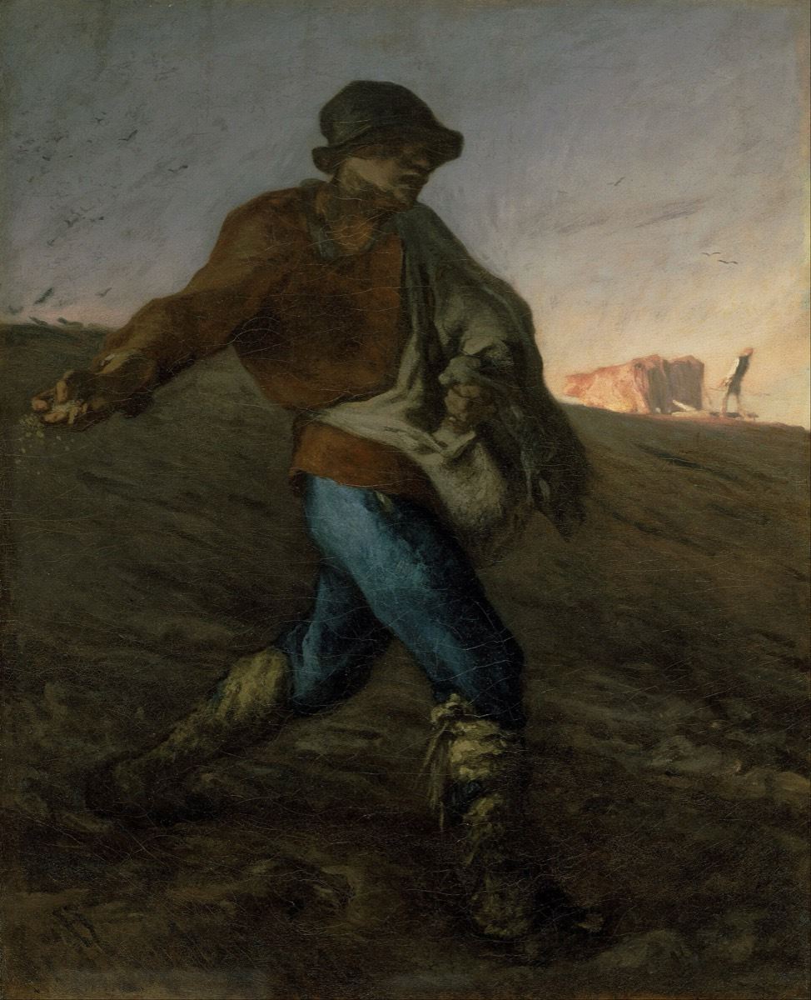

The Sower
The Parables by the Sea
He answered and said unto them, He that soweth the good seed is the Son of man.
Matthew 13:37

The talks
This cohort does not use the usual seats. Everything in Matthew 13 was said on a single afternoon, from a boat, to a crowd standing on the shore. There are seven parables in that chapter and there are eight of you. One talk opens the week by asking why he taught this way at all, and the other seven each take one parable.
- Why parables 1 Corinthians 2:7-14 read against Matthew 13:10-17. The disciples asked him this directly and his answer disturbs people. Take the question seriously, use Paul to open it, and do not tidy up the hard part.
- The Sower Matthew 13:3-9 and 18-23. He explains this one himself, and in Mark 4:13 he says if you do not understand this parable you will not understand any of them. Find out why it is the key.
- The Wheat and the Tares Matthew 13:24-30 and 36-43. Find out what darnel is, what it looks like next to young wheat, and why pulling it early would take the wheat with it.
- The Mustard Seed Matthew 13:31-32. Find out how large a mustard plant actually grows in Galilee and whether birds really lodge in it.
- The Leaven Matthew 13:33. Leaven is used as an image of corruption nearly everywhere else in scripture. Why use it for the kingdom here?
- The Hidden Treasure Matthew 13:44. Find out what the law said about treasure found in another man's field, and what the man in the story is actually doing when he buys it.
- The Pearl of Great Price Matthew 13:45-46. Find out what pearls were worth in that world and where they came from. Notice the merchant was already looking.
- The Net Matthew 13:47-50. A dragnet takes everything. Work the sorting on the shore, and put it next to the wheat and the tares.
The title
He tells this parable to a crowd and then, in private, tells his disciples who the sower is: the Son of man. That single line in Matthew 13:37 is why this cohort carries the name. It is worth noticing what kind of sower he is. He does not aim. He walks the field and throws, and the seed lands on the path and the rocks and the thorns and the good ground alike, and he keeps throwing. Any farmer in that crowd would have found it wasteful. That is the first thing the parable teaches, before any of the four soils are explained. In Mark's version he says something he says nowhere else: know ye not this parable? and how then will ye know all parables? He is telling us this one is the key that opens the rest. All seven of the parables in this cohort were given on the same afternoon, from a boat pushed out a little from the shore because the crowd was too big to stand in. Everything you will speak about this week happened in the space of a few hours.
Required reading, for every speaker in this cohort
- Matthew 13:1-52, straight through
- Mark 4:1-34
- Isaiah 6:9-10
- 1 Corinthians 2:7-14
- Matthew 13:10-17 and JST Matthew 13:10-11
Questions for thought
- The disciples ask why he speaks in parables and his answer quotes Isaiah about people who see and do not perceive. Does a parable reveal or conceal?
- Find out what a sower's technique actually was. Was the scattering as careless as it sounds to us?
- Four soils, one seed. Is the parable about the seed or about the ground?
- Six of these seven are introduced with "the kingdom of heaven is like." What does it tell you that he needed seven pictures instead of one definition?
- The treasure and the pearl both involve selling everything. One man was searching and one was not. Why include both?
- Leaven is corruption in almost every other scripture. Why is it the kingdom here?
- Find out what darnel is and what happens if it gets milled in with the wheat. Does that change how you read the parable?
- He explains two of these and leaves five unexplained. Why explain some and not others?
- Which of the four soils are you this month? Answer honestly, and answer for this month rather than in general.